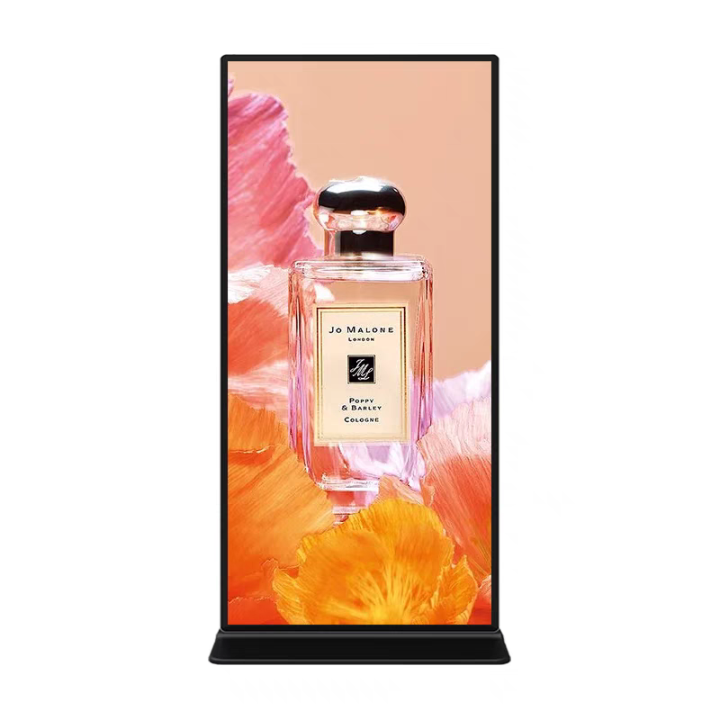
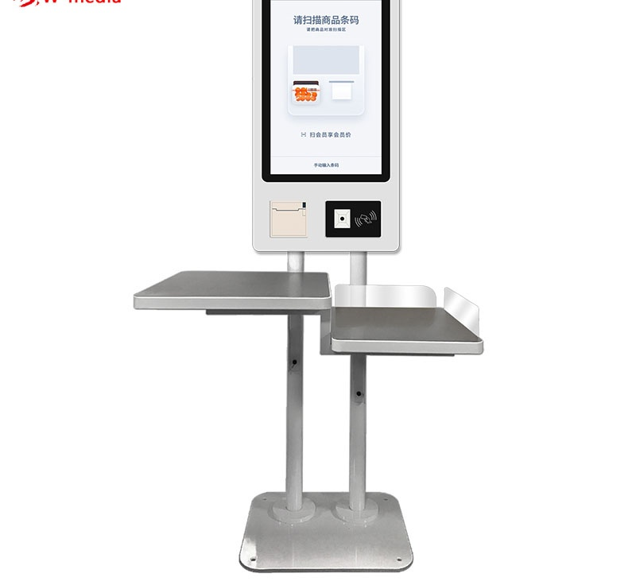
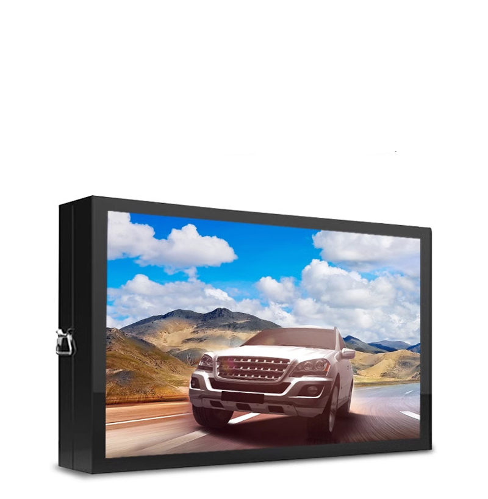
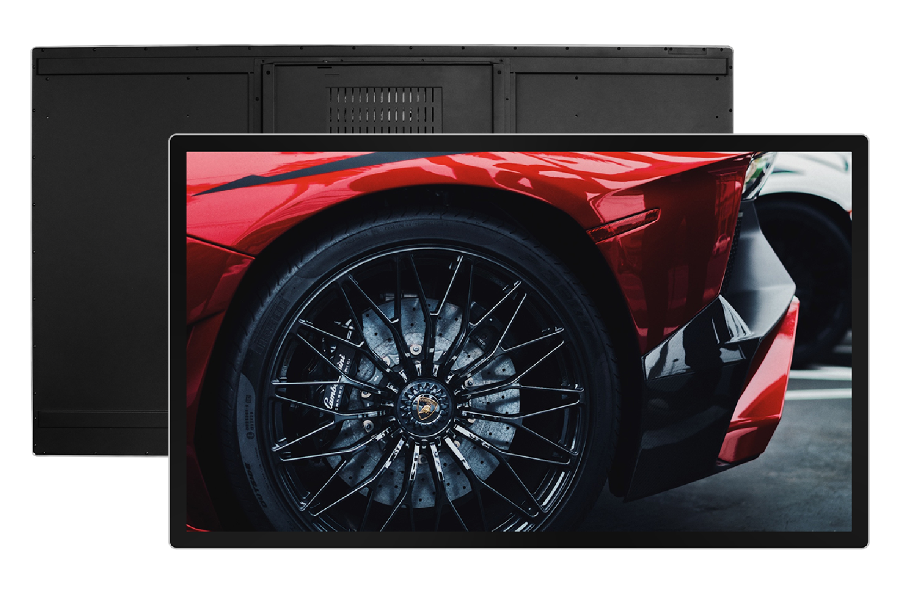
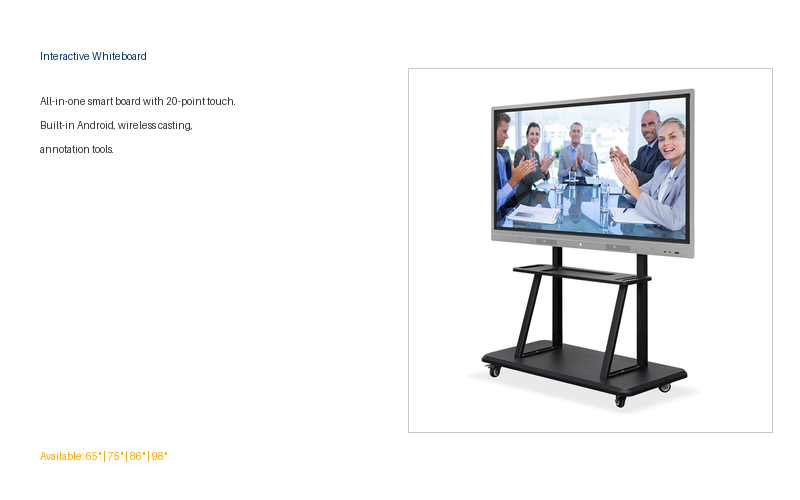
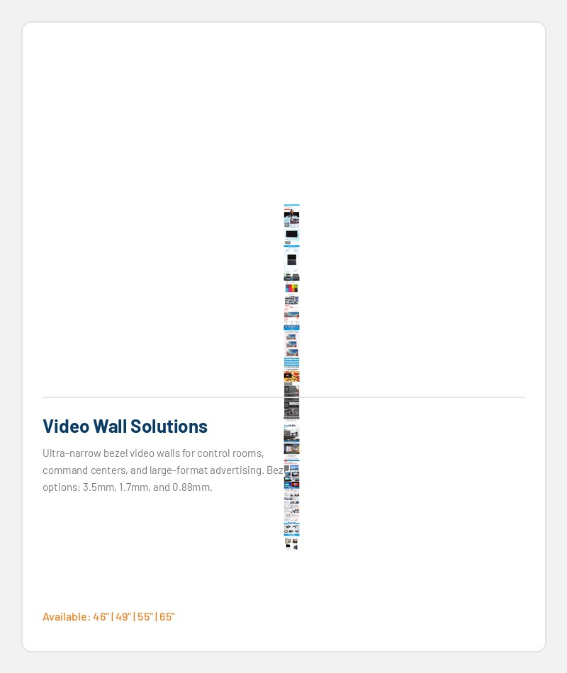
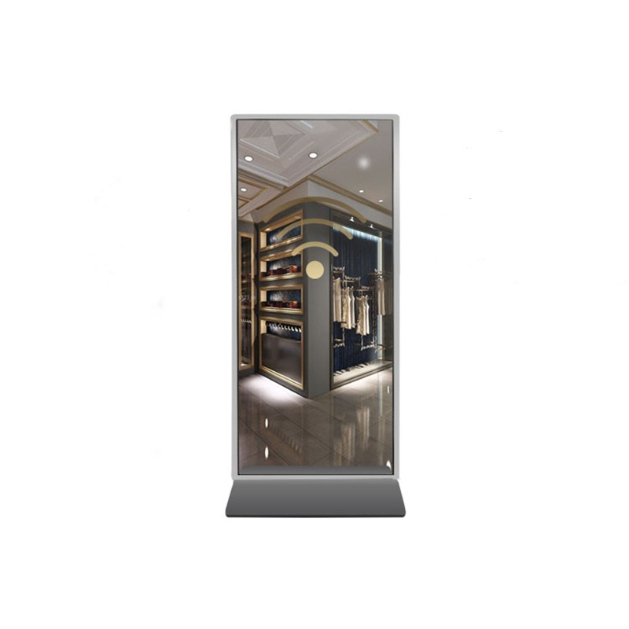

ПРОДУКТОВЫЕ ПЛАТФОРМЫ
Начните с аппаратного обеспечения. Настройте его для своего проекта.
Выберите коммерческий дисплей или платформу самообслуживания, а затем согласуйте с нашей командой требования к экрану, сенсорному экрану, операционной системе, периферийным устройствам, брендингу и месту назначения.
КОММЕРЧЕСКОЕ ОБОРУДОВАНИЕ
Восемь семейств продуктов для витрин и проектов самообслуживания.
Фотографии интерфейса и разъемов будут добавлены после того, как будут доступны соответствующие производственные материалы. Окончательные характеристики подтверждаются для каждой конфигурации.

Напольные дисплеи LCD
Коммерческие рекламные дисплеи LCD для розничной торговли, торговых центров, гостиниц, вестибюлей и общественной информации.
Посмотреть конфигурации →
Киоски самостоятельного заказа
Столешница, наклонное и отдельно стоящее оборудование, подготовленное для заказа, очереди и интеграции программного обеспечения POS.
Посмотреть конфигурации →
Киоски самообслуживания
Настраиваемые терминалы для сканирования, печати чеков, установки платежных устройств и поддержки рабочих процессов в розничной торговле.
Посмотреть конфигурации →
Наружные цифровые вывески
Адаптированные к погодным условиям дисплеи с яркостью, охлаждением, стеклянными и сенсорными опциями в зависимости от проекта.
Посмотреть конфигурации →
Настенные дисплеи
Книжная или альбомная ориентация LCD Аппаратное обеспечение для досок меню, информации, рекламы и интерактивного использования.
Посмотреть конфигурации →
Интерактивные доски
Широкоформатные сенсорные дисплеи для образовательных учреждений, конференций и презентаций.
Посмотреть конфигурации →
LCD Видеостены
Многопанельные системы отображения для диспетчерских, торговых помещений и широкоформатные информационные дисплеи.
Посмотреть конфигурации →
Специализированные и индивидуальные проекты
Конфигурации шкафа, брендинга, экрана и модулей разрабатываются на основе справочного материала или описания проекта.
Посмотреть процесс →Нужна конфигурация, а не онлайн-цена?
Отправьте заявку, укажите предпочтительный размер, операционную систему, требования к сенсорному экрану, количество и пункт назначения. Мы рассмотрим подходящее оборудование перед подготовкой предложения.
Отправить требования к проекту →